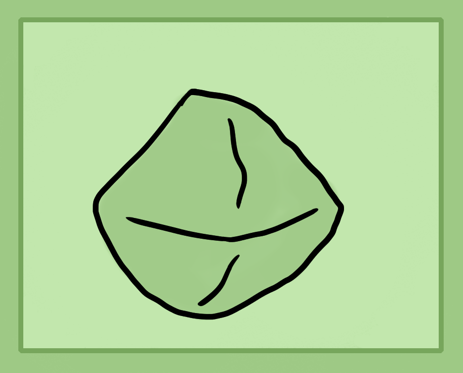

Alchemy Stones
These are what is known as philosophers stones. They're a stone or resin made out of the purified material of whatever ingredients you're using.
To make them you simply make a spagyric tincture and then simmer it down to a resin like in the resin chapter. Or another way to think of it is that you're making a resin and adding the refined salt or the impure ash and straining away the undissolved ashes.
So they're a combination of the salt and resin oil of an animal or vegetable ingredient. The spirit which is usually alcohol or ammonia is used just to dissolve this stone or the resin oil so it can be mixed with its salt.
I currently do not know what a mineral stone would be. Perhaps its simply just the refined alcohol stone dried out and crystalised.
Post note - This chapter needs some explaining and work. I have some other ideas on what alchemy stones are, essentially a quintessence, perhaps alkaloids, organic metallic compounds and some other things. Wait for the next book/site